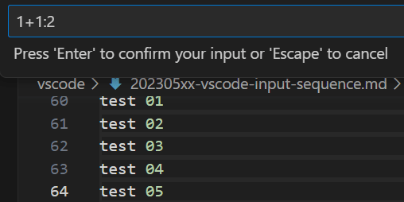

2023/05/15
VSCodeの拡張機能「vscode-input-sequence」を使う
「vscode-input-sequence」は、文章やソースコードに連番を追加できる拡張機能です。
- 連番入力のスタートと、増減させるステップの数値を指定できます。
- 連番の演算（＋かー）を指定できます。
- 桁数を指定できます。
- 基数（10進数、2進数など）を指定できます。
vscode-input-sequence - Visual Studio Marketplace
Extension for Visual Studio Code - sequential-number in vscode
使い方
以下の手順で、連番を追加できます。
- 複数選択をする（Alt押しながら選択で複数選択、もしくはShift + Alt同時押しで矩形選択）
- Ctrl + Alt + 0 を押す
- 連番設定を入力する
連番設定は以下のフォーマットになっています。
<start> <operator> <step> : <digit> : <radix>
| 設定 | 説明 |
|---|---|
| start | 開始する数です。 |
| operator | 演算子です。+もしくは-を指定します。 |
| step | 増減させる数値です。 |
| digit | 数字の桁数です。 |
| radix | 基数です。2とすると、2進数で数を表示させます。 |
※start以外の値は省略可
例） 1+1:2 1から1ずつカウントアップ、桁数2
1+2:4:2 1から2ずつカウントアップ、桁数4、2進数
設定
長らくメンテナンスされておらず、バグがあるようです。
回避するために、Replace Selectionの設定をONにする必要があります。

参考
recently,it is repeated for each character entered · Issue #15 · tomoki1207/vscode-input-sequence
以上です。